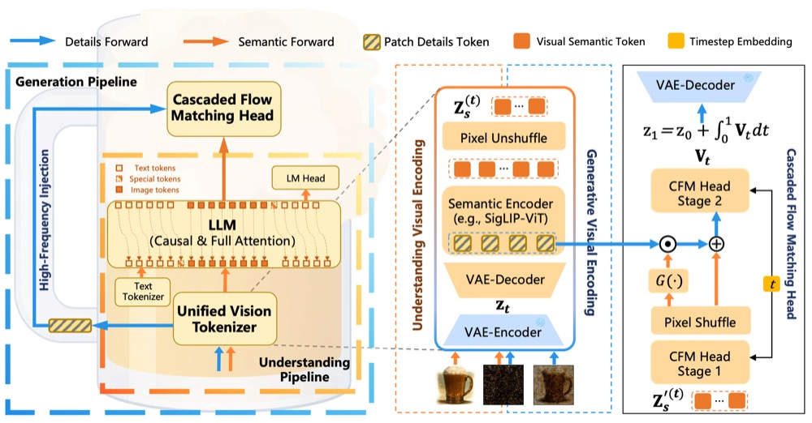
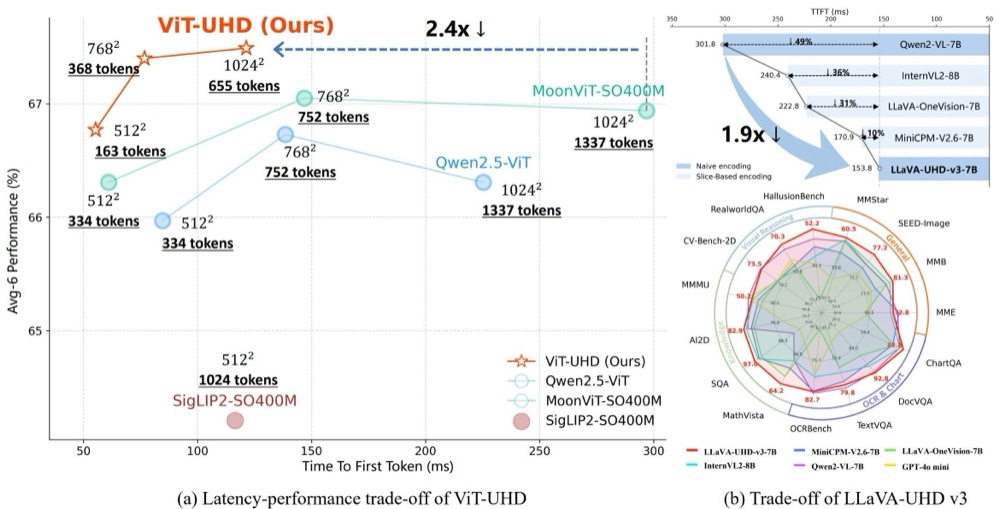
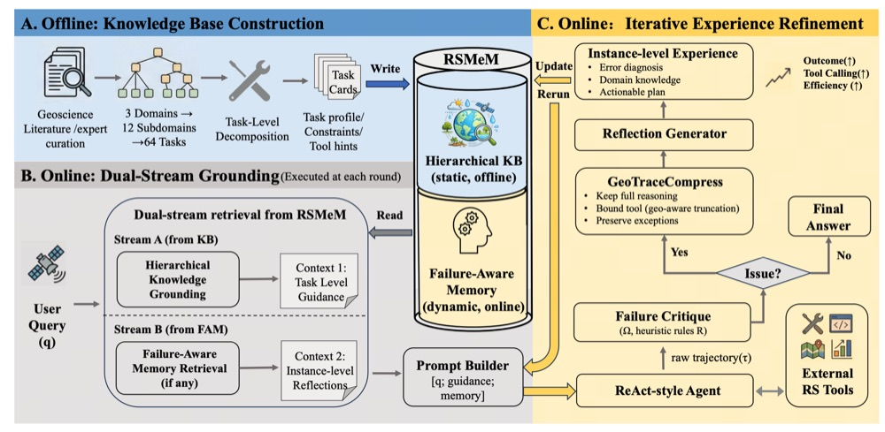
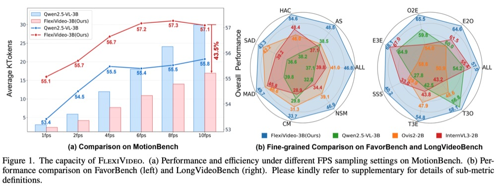
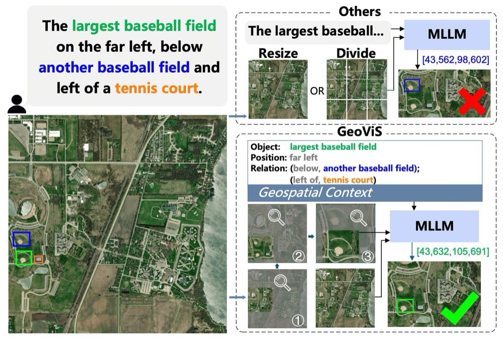
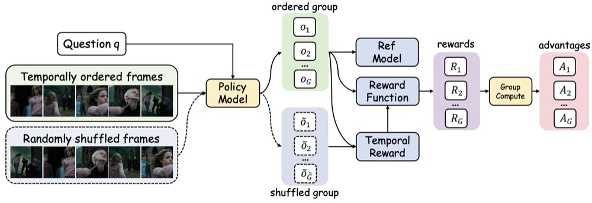
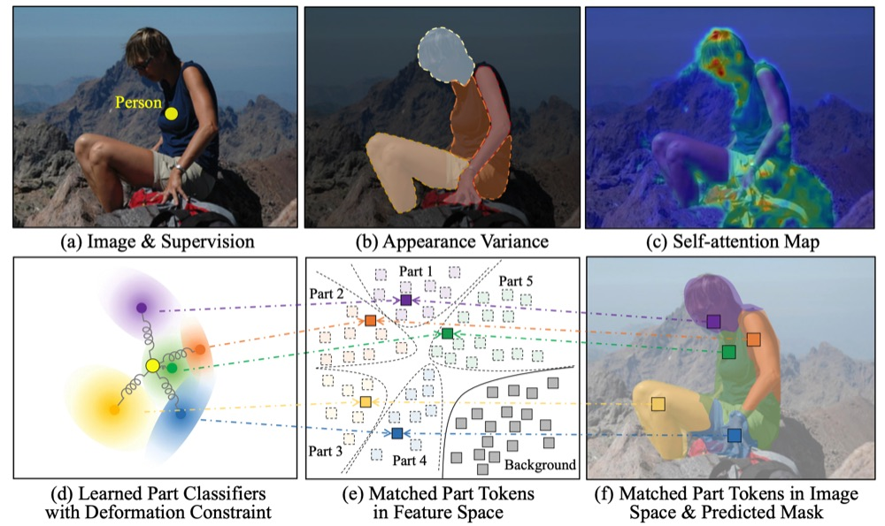

About Me
I am an assistant researcher at Tsinghua University, working in the Natural Language Processing Lab (THUNLP) on multimodal large language models. I received my Ph.D. degree in June 2024 from the University of Chinese Academy of Sciences, where I was a member of LAMP, advised by Prof. Qixiang Ye. I received my B.E. degree from Wuhan University in June 2019.
My research interests are multimodal large models and multimodal data representation learning, specifically high-resolution image visual perception, multimodal video understanding, and remote sensing multimodal large models. Recently I am also interested in generative visual perception for everything in the world, as well as spatial intelligence. Welcome for discussion and collaboration, feel free to drop me an email.
I have published more than 30 papers at top-tier artificial intelligence venues, including CVPR, NeurIPS, ACL, ICCV, ECCV, IJCV, IEEE TPAMI and IEEE TNNLS, and my work has received 3,000 citations on Google Scholar. One of them was selected as a Best Paper Candidate at CVPR 2026. I serve as a reviewer for CVPR, NeurIPS, ECCV, IEEE TPAMI and IEEE TIP, where I received the Outstanding Reviewer Award at CVPR 2026.
Selected Publications
Showing all 11 selected publications.
-

Cheers: Decoupling Patch Details from Semantic Representations Enables Unified Multimodal Comprehension and Generation
ECCV 2026CCF-BCorresponding author
A unified multimodal model that separates patch detail from semantics, matching Tar-1.5B on GenEval and MMBench at 20% of the training cost.
Citations 1
-

-

-

-

GeoViS: Geospatially Rewarded Visual Search for Remote Sensing Visual Grounding
CVPR 2026, OralCCF-ABest Paper CandidateCorresponding author
Reformulates remote sensing visual grounding as reward-guided tree search, locating tiny targets inside kilometre-scale scenes before conditional grounding.
Citations 3
-

LLaVA-UHD v2: Exploiting Hierarchical Vision Granularity in MLLMs via Inverse Semantic Pyramid
AAAI 2026CCF-ACorresponding author
A hierarchical window transformer that builds an inverse semantic pyramid, progressively injecting low-level visual detail into high-level semantics for fine-grained perception.
Citations 31
-

Video-R1: Reinforcing Video Reasoning in MLLMs
NeurIPS 2025CCF-AMost Influential Paper Top 10Corresponding author
The first systematic study of the R1 paradigm for video reasoning; T-GRPO adds temporal modelling, and Video-R1-7B surpasses GPT-4o on VSI-Bench.
Citations 469
-

Discriminatively Matched Part Tokens for Pointly Supervised Instance Segmentation
IJCV 2025CCF-A · IF 10.3 · CAS Q1First author
Allocates a token per object part and re-estimates it with deformable part classifiers, improving point-supervised segmentation by 2.0% mAP50 on PASCAL VOC.
Citations 3
-

-

Conformer: Local Features Coupling Global Representations for Recognition and Detection
IEEE TPAMI 2023CCF-A · IF 20.4 · CAS Q1 TopSecond author
Couples local convolutional features with global self-attention representations in a dual-branch backbone for recognition and detection.
Citations 1,360
-

Convex-Hull Feature Adaptation for Oriented and Densely Packed Object Detection
IEEE TCSVT 2022CCF-B · IF 10.8 · CAS Q1 TopFirst author
Represents oriented and densely packed objects with convex hulls instead of axis-aligned boxes; the conference version appeared at CVPR 2021.
Citations 373
No publication matches the current filter.
Honors and Awards
- Best Paper Candidate, CVPR 2026 (GeoViS).
- Outstanding Reviewer, CVPR 2026.
- Excellent Student Scholarship, Chinese Academy of Sciences, 2020.
Experience and Education
-
2024 — Present
Assistant Researcher, Tsinghua University
Natural Language Processing Lab (THUNLP), working on multimodal large language models. Beijing, China.
-
2019 — Jun 2024
Ph.D., University of Chinese Academy of Sciences
LAMP. Advisor: Prof. Qixiang Ye. Beijing, China.
-
Jun 2019
B.E., Wuhan University
Bachelor of Engineering. Wuhan, China.
Contact
For collaborations or enquiries, please write to guozonghao96@outlook.com.